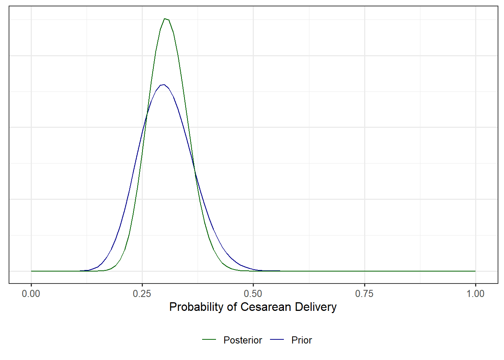

| 3 | 1 | 0 | 0 | 0 |
| 2 | 5 | 6 | 9 | 0 |
| 5 | 1 | 0 | 1 | 0 |
11 Updating Prior Beliefs (Posterior Distributions)
The previous chapter addressed the construction of a prior distribution, a distribution which captures the uncertainty we have in the unknown parameters governing the data generating process prior to observing any data. Once we observe data, however, the data should update our beliefs about the parameters. Through an application of Bayes’ Theorem, we derive the distribution of the parameters after observing the data, incorporating our prior beliefs. This is known as the posterior distribution.
Definition 11.1 (Posterior Distribution) A distribution quantifying our beliefs about the uncertainty in the parameter(s) of the underlying sampling distribution after observing data. This is often denoted by \(\pi(\boldsymbol{\theta} \mid \mathbf{y})\) where \(\boldsymbol{\theta}\) is the parameter vector and \(\mathbf{y}\) the observe data.
Given the likelihood \(f(\mathbf{y} \mid \boldsymbol{\theta})\) and a prior distribution on the parameters \(\pi(\boldsymbol{\theta})\), the posterior distribution is computed using Bayes Theorem:
\[\pi(\boldsymbol{\theta} \mid \mathbf{y}) = \frac{f(\mathbf{y} \mid \boldsymbol{\theta}) \pi(\theta)}{\int f(\mathbf{y} \mid \boldsymbol{\theta}) \pi(\boldsymbol{\theta}) d\boldsymbol{\theta}}.\]
A posterior distribution is the conditional distribution of the parameters given the observed data. This allows us to make statements like “given the data, how likely is it that the parameter is between \(a\) and \(b\).” Just as a prior distribution depends on a subjective interpretation of probability, so too does a posterior distribution. With a posterior distribution, we have a way of quantifying our uncertainty in the parameters given the observed data!
Note
Recall that there is no “one” prior distribution but instead a different prior distribution for each set of prior beliefs. Similarly, there is no “one” posterior distribution. When we say “the” posterior, we are referring to the posterior distribution corresponding to the chosen prior distribution and the data observed.
Example 11.1 (Naive Classification of College Students, Cont.) Consider Example 10.1 introduced in the previous chapter. Suppose that out of the 10 students, 3 identify as female.
Given this data, how sure is the individual that the college students are from ISU? How has the data observed impacted the individual’s prior beliefs?
Recall that we had previously said that the likelihood could be modeled as a Binomial distribution. Specifically, letting \(Y\) represent the number of college students in the group that identify as female, then \(Y \sim Bin(10, \theta)\). That is,
\[ f(y \mid \theta) = \binom{n}{y} \theta^y (1 - \theta)^{n-y}. \tag{11.1}\]
Further, based on our prior beliefs, we defined a prior distribution in Equation 10.2:
\[\pi(\theta) = 0.4\delta(\theta - 0.246) + 0.6\delta(\theta - 0.563).\]
For this likelihood and prior distribution, applying Bayes Theorem provides the corresponding posterior distribution. Specifically,
\[\pi(\theta \mid y) = \frac{\binom{10}{3} \theta^{3} (1 - \theta)^{10 - 3} \left[0.4\delta(\theta - 0.246) + 0.6\delta(\theta - 0.563)\right]}{\int_{0}^{1} \binom{10}{3} \theta^{3} (1 - \theta)^{10 - 3} \left[0.4\delta(\theta - 0.246) + 0.6\delta(\theta - 0.563)\right] d\theta}. \tag{11.2}\]
Equation 11.2 is accurate, but it is not extremely useful in its current form; in particular, the form is daunting and makes it difficult to interpret directly. We can begin simplifying the expression by first simplifying the denominator. Note that
\[ \begin{aligned} \text{denom} &= \int_{0}^{1} \binom{10}{3} \theta^{3} (1 - \theta)^{10 - 3} (0.4) \delta(\theta - 0.246) \\ &\qquad + \int_{0}^{1} \binom{10}{3} \theta^{3} (1 - \theta)^{10 - 3} (0.6) \delta(\theta - 0.563) d\theta \\ &= \binom{10}{3} (0.246)^{3} (0.754)^{7} (0.4) + \binom{10}{3} (0.563)^{3} (0.437)^{7} (0.6). \end{aligned} \]
Notice that this denominator does not depend on the parameter (as the parameter was integrated out). The denominator is function only of the observed data.
Important
Once the data is observed, the denominator in the posterior distribution is a constant.
We now use this computed denominator to simplify Equation 11.2. Plugging in, we have
\[ \begin{aligned} \pi(\theta \mid y) &= \frac{\binom{10}{3} \theta^{3} (1 - \theta)^{10 - 3} \left[0.4\delta(\theta - 0.246) + 0.6\delta(\theta - 0.563)\right]}{\binom{10}{3} (0.246)^{3} (0.754)^{7} (0.4) + \binom{10}{3} (0.563)^{3} (0.437)^{7} (0.6)} \\ &= \theta^{3} (1 - \theta)^{10 - 3} \left[\frac{\delta(\theta - 0.246)}{(0.246)^3 (0.754)^7 + (0.563)^3 (0.437)^7 (3/2)} \right. \\ &\qquad + \left.\frac{\delta(\theta - 0.563)}{(0.246)^3 (0.754)^7 (2/3) + (0.563)^3 (0.437)^7}\right],\\ \end{aligned} \]
which simplifies to
\[\pi(\theta \mid y) = (0.7169)\delta(\theta - 0.246) + (0.2831)\delta(\theta - 0.563). \tag{11.3}\]
Given the data, the individual can be 71.69% sure the students attend RHIT. Notice that the data has reversed the individual’s prior beliefs. Where they were 60% sure the students were from ISU, once they observed the data, they are now more than 70% sure the students are from RHIT. The data observed (3 out of 10 students identifying as female) could easily have come from either school; that is, it is entirely possible that we could sample 10 students at random from ISU and 3 identify as female. However, such a sample is more likely to occur if we sample our 10 students from the RHIT student body. Therefore, the individual’s belief about where the students attend school was updated based on the data.
This example illustrates how Bayes Theorem can be used to update our beliefs given observed data. However, there are some additional observations that are worth noting. First, note that the support of the posterior matches the support of the prior.
Note
If the support of the likelihood does not depend on the parameter, then the support of the posterior matches the support of the chosen prior.
If the support of the likelihood depends on the parameter, the data will further refine the support of the posterior.
If you go into a problem wholeheartedly believing something is not possible, then no amount of data will convince you otherwise; think of this as a core belief that is unshakable. That is, any parameter value that is excluded by the prior distribution will be excluded in the posterior distribution automatically. Data can only convince those who are open to believing something different!
Second, notice the hardest computational aspect of the above example was computing the integral in the denominator and then carrying the algebra through in order to determine a simplified form of the posterior distribution. While we could rely on a computer algebra system in order to perform these computations in simple settings, relying on these tools tends to fail in more complex problems encountered in practice. Moving forward, we will want a way of overcoming the integral in the denominator, especially in cases when the parameter vector grows to be high-dimensional. To begin emphasizing the need to find alternatives, consider the following observation: the denominator in the computation of the posterior is constant with respect to the parameter. Careful consideration of this observation allows us to move through computations more quickly.
Applying Bayes Theorem in Practice:
The denominator in Bayes rule exists to ensure the distribution integrates to 1; it is just a scaling constant. That is,
\[\pi(\boldsymbol{\theta} \mid \mathbf{y}) \propto f(\mathbf{y} \mid \boldsymbol{\theta}) \pi(\boldsymbol{\theta}).\]
This recognition allows us to quickly compute the kernel of the posterior, which in many cases is sufficient for identifying the posterior distribution.
Finally, we emphasize that the posterior distribution does not tell you the value of the unknown parameter — a parameter is unknown and will always remain so! The posterior distribution only tells you the beliefs you have about that parameter given the data you have observed and your prior beliefs.
Example 11.2 (C-section Deliveries Continued) Example 9.1 introduced a study, a component of which includes estimating the probability of a mother undergoing a C-section delivery at a particular hospital.
Using the likelihood developed in Example 9.1 and the prior developed in Example 10.2, derive the form of the posterior distribution given a sample of data \(X_1, X_2, \dotsc, X_n\). Then, suppose we observed the following data, how does it update our beliefs?
Solution. We first develop a general solution before substituting in the observed data. Recall that the likelihood (Equation 9.1) was given by
\[f(\mathbf{x} \mid \theta) = \theta^n (1 - \theta)^{n \bar{x}},\]
and the prior (Equation 10.3) was given by
\[\pi(\theta) = \frac{\Gamma(a+b)}{\Gamma(a) \Gamma(b)} \theta^{a-1} (1 - \theta)^{b-1},\]
where we have written the prior in its general form (not with the specific choices of the hyperparameter). Applying Bayes Theorem, we know that the posterior is proportional to the product of the likelihood and prior; that is,
\[ \begin{aligned} \pi(\theta \mid \mathbf{x}) &\propto f(\mathbf{x} \mid \theta) \pi(\theta) \\ &= \theta^n (1 - \theta)^{n \bar{x}} \frac{\Gamma(a + b)}{\Gamma(a) \Gamma(b)} \theta^{a-1} (1 - \theta)^{b - 1} \\ &\propto \theta^{n + a - 1} (1 - \theta)^{n\bar{x} + b - 1}. \end{aligned} \]
Observe that since we are simply trying to determine what the posterior is proportional to, we can drop any scaling constants (with respect to the parameter); doing this in line (3) allows us to drop the gamma terms, simplifying the expression greatly. In fact, we now note that our posterior distribution is proportional to the form \(\theta^{\text{something} - 1} (1 - \theta)^{\text{something else} - 1}\), which we recognize as the kernel of a Beta distribution. That is, the appropriate scaling term to ensure that the posterior integrates to 1 (and is therefore a valid density function) is
\[\frac{\Gamma(n + a + n\bar{x} + b)}{\Gamma(n + a)\Gamma(n\bar{x} + b)},\]
giving a posterior distribution of
\[\pi(\theta \mid \mathbf{x}) = \frac{\Gamma(n + a + n\bar{x} + b)}{\Gamma(n + a)\Gamma(n\bar{x} + b)} \theta^{n + a - 1} (1 - \theta)^{n\bar{x} + b - 1}, \tag{11.4}\]
or \(\theta \mid \mathbf{x} \sim Beta(n + a, n\bar{x} + b)\). Of course, \(a\) and \(b\) are known values (chosen in the derivation of the prior), and once we observe the data, \(n\), \(\bar{x}\) are also known. Therefore, the posterior distribution is fully specified. Specifically, substituting in these known values given the data observed, we have that \(\theta \mid \mathbf{x} \sim Beta(32, 72)\).
Figure 11.1 compares the prior and posterior densities given the data in Example 11.2. Notice the two distributions are similar. Both have the same support (the interval \((0, 1)\)), and both tend to have a mode (peak) at roughly the same location. However, the posterior distribution has less variability (notice most of its mass is condensed around a tighter interval). This suggests that the data has increased our confidence in the value of the unknown parameter. However, notice that we did not “solve” for the value of \(\theta\); in fact, the posterior distribution highlights that we are not certain about the value of \(\theta\). Instead, the posterior is simply telling us how likely we feel the parameter is within any particular interval given the observed data.
For example, since
\[\int_{0.2}^{0.4} \pi(\theta \mid \mathbf{x}) d\theta = \int_{0.2}^{0.4} \frac{\Gamma(32 + 72)}{\Gamma(32)\Gamma(72)} \theta^{32 - 1} (1 - \theta)^{72 - 1} d\theta = 0.971,\]
given the data observed, we are now 97.1% sure that the rate of C-sections at the hospital is between 20% and 40%; this is an increase from what we believed prior to observing the data.
